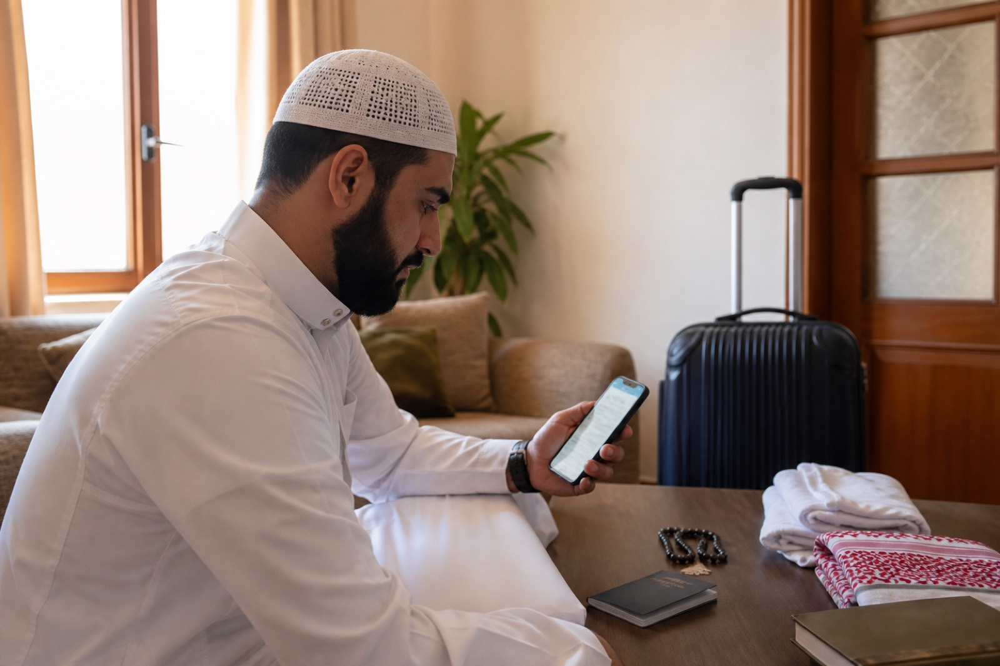
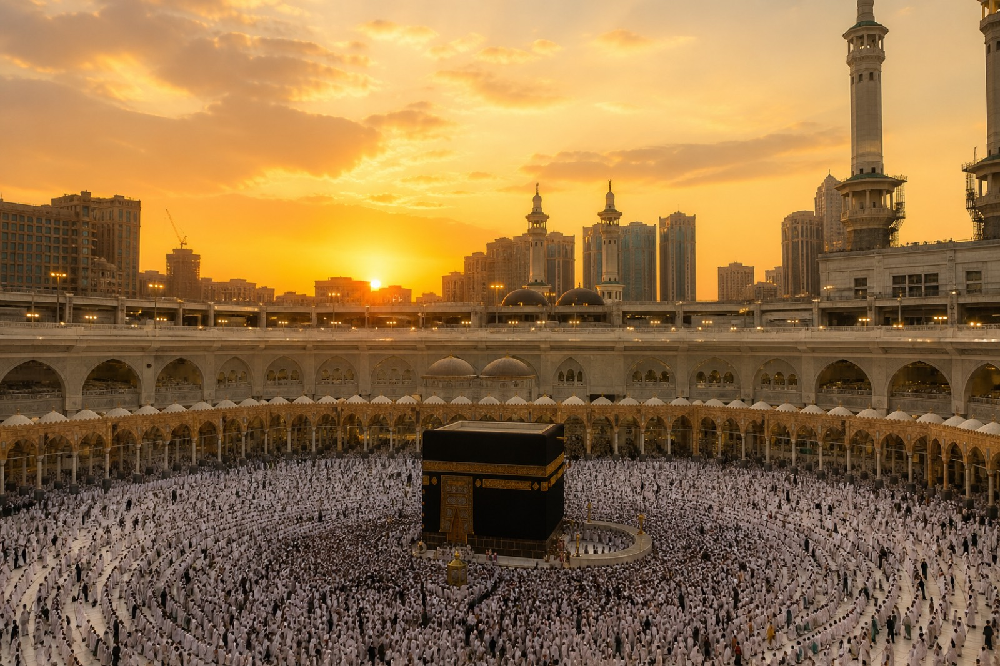

Complimentary gift with your purchase
A calm selection for travel and your time in al-Haramayn — Arabic, transliteration, and meaning. Save this PDF on your phone for offline reading.
Make your intention for Umrah or Hajj sincerely for Allah alone. You may say it in your own language if that helps your heart.
سُبْحَانَ الَّذِي سَخَّرَ لَنَا هَٰذَا وَمَا كُنَّا لَهُ مُقْرِنِينَ، وَإِنَّا إِلَىٰ رَبِّنَا لَمُنقَلِبُونَ
Subḥāna-lladhī sakhkhara lanā hādhā wa mā kunnā lahu muqrinīn, wa innā ilā rabbinā la-munqalibūn.
Glory be to the One who has subjected this to us, and we could not have done it by ourselves — and to our Lord we will surely return. (Qur’an 43:13–14)
لَبَّيْكَ اللَّهُمَّ لَبَّيْكَ، لَبَّيْكَ لَا شَرِيكَ لَكَ لَبَّيْكَ، إِنَّ الْحَمْدَ وَالنِّعْمَةَ لَكَ وَالْمُلْكَ، لَا شَرِيكَ لَكَ
Labbayka Allāhumma labbayk. Labbayka lā sharīka laka labbayk. Inna al-ḥamda wa-n-ni‘mata laka wa-l-mulk. Lā sharīka lak.
Here I am, O Allah, here I am. Here I am — You have no partner — here I am. Truly all praise, favour, and sovereignty are Yours. You have no partner.

al-Masjid al-Ḥarām — keep your voice soft and give space to others.
رَبَّنَا آتِنَا فِي الدُّنْيَا حَسَنَةً وَفِي الْآخِرَةِ حَسَنَةً وَقِنَا عَذَابَ النَّارِ
Rabbanā ātinā fī d-dunyā ḥasanah, wa fī l-ākhirati ḥasanah, wa qinā ‘adhāba n-nār.
Our Lord, give us good in this world and good in the Hereafter, and protect us from the punishment of the Fire. (Qur’an 2:201)
رَبِّ اشْرَحْ لِي صَدْرِي وَيَسِّرْ لِي أَمْرِي
Rabbi shraḥ lī ṣadrī wa yassir lī amrī.
My Lord, expand my chest for me and make my affair easy for me. (Qur’an 20:25–26)
Send ṣalawāt upon the Prophet ﷺ. If you reach the Rawḍah without harming others, make quiet du‘a. If it is crowded, prayer anywhere in the mosque remains a great blessing — do not rush or push.